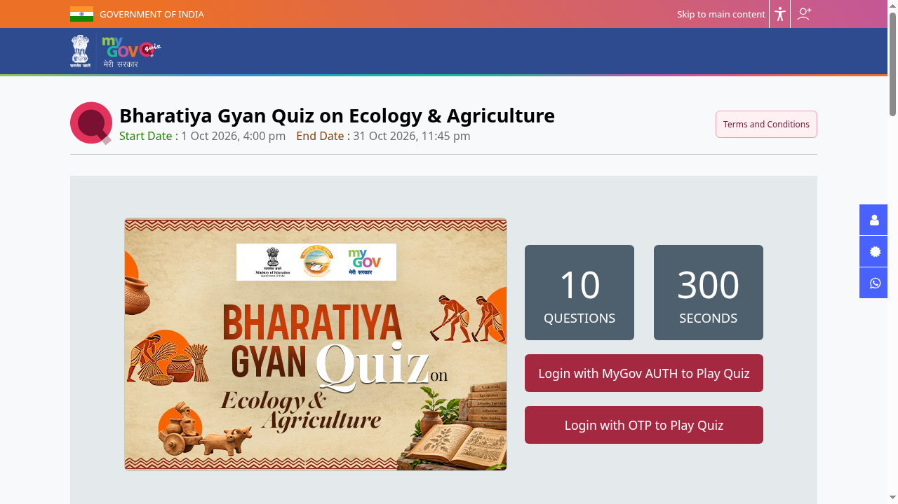

Bharatiya Gyan quiz on Ecology and Agriculture: ₹3,000 book hamper, ends 31 October
The Indian Knowledge Systems (IKS) Division of the Ministry of Education and MyGov run a monthly national quiz on India's traditional knowledge. October 2026's theme is Ecology and Agriculture. It has 10 questions in 300 seconds and is open to all Indian citizens. Winners get a ₹3,000 IKS book hamper and everyone gets an e-certificate. It closes on 31 October 2026, 11:45 PM.

Official publisher artwork hosted by its publisher. Official source. Independent guide, not affiliated or sponsored. Artwork and trademarks belong to their owners.
How to play: step by step
Checked on the live MyGov quiz pages on 19 October 2026.
- Open the official quiz page: quiz.mygov.in/quiz/bharatiya-gyan-quiz-on-ecology-agriculture. The page shows 10 questions, 300 seconds and the end date (31 October 2026, 11:45 PM).
- Tap Login with MyGov AUTH to Play Quiz or Login with OTP to Play Quiz.
- New to MyGov: register with MyGov Auth or with DigiLocker (MeriPehchaan single sign-on). Already registered: enter your email or mobile number and tap Request OTP.
- Enter the OTP sent to your email/mobile to log in.
- Fill your profile details if the quiz asks for them, then click Play Quiz - the 300-second timer starts immediately and entries cannot be withdrawn.
- Answer the 10 questions and submit. Winners get the ₹3,000 IKS book hamper and everyone gets an e-certificate in their MyGov dashboard.


Steps 5-6 happen inside your own login, so they are not shown as screenshots.
Video guides
We searched YouTube on 19 October 2026 for a step-by-step entry video for this quiz in English and in Malayalam. We could not verify one that covers this quiz and the current MyGov portal, so we are not linking any rather than risk an unrelated or answer-key video.
What does the quiz cover?
This month's theme is Ecology and Agriculture. The official page points to texts such as the Vrikshayurveda, Krishi-Parashara, Kashyapiya Krishi-Sukti, the Arthashastra, the Brihat Samhita and Manasara, and topics like soil, crops, water management, forests, biodiversity and seasonal cycles. Resources are at iksindia.org, per the page. A new theme is planned each month.
Rules from the official page
| Who | All Indian citizens. People connected with organising the quiz, and their immediate family, are not eligible. |
|---|---|
| Format | Up to 10 questions within 300 seconds. The quiz starts when you click Play Quiz. |
| Entries | One per participant. Submitted entries cannot be withdrawn. |
| Details | You give your name, email, phone number and any other required details, which MyGov, the Ministry of Education and IKS Division may use to run the quiz and confirm your details. |
| Dates | 1 October 2026, 4:00 PM to 31 October 2026, 11:45 PM. |
What are the prizes?
- An IKS-curated book hamper worth ₹3,000 per winner
- Acknowledgement on IKS social media handles and other official channels, where applicable
- Winners may be invited to attend an IKS event, subject to its nature and schedule
- An e-certificate for every participant
The page says the "top 5 performers every month" are rewarded, but the terms say winners are selected solely by an automated random draw from a pool of entries with all answers correct within time. So a perfect score gets you into the pool; it does not rank you. The page does not say how many winners there are in total beyond the top 5 line.
A careful checklist
- Open quiz.mygov.in and find the quiz yourself.
- Read the full Terms and Conditions on the page.
- Start when you have 5 uninterrupted minutes and finish before 31 October 2026, 11:45 PM.
We did not log in or play. We read the prizes and all 18 rules on the quiz page.
Frequently asked questions
Is there an entry fee?
The page does not mention one.
Is the prize cash?
No. The listed reward is a book hamper worth ₹3,000 per winner.
Sources: Official MyGov quiz page . Checked 9 October 2026; play steps and video search re-checked 19 October 2026. This is an AiCoN explainer, not a government publication.